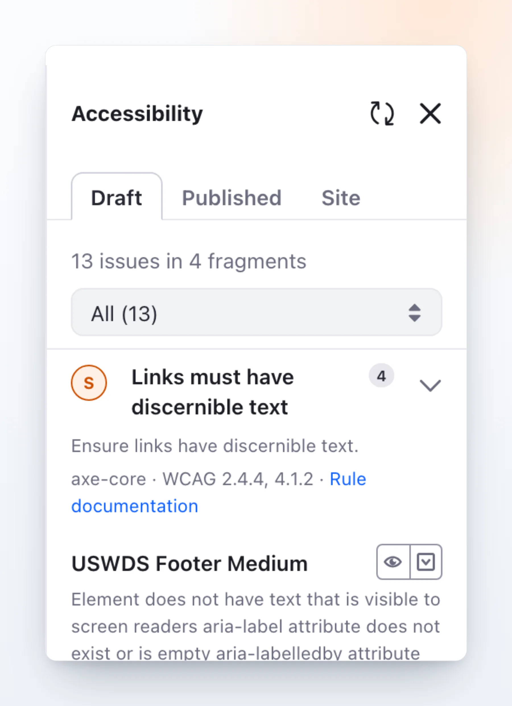

Draft tab: live feedback while you author
Scan the page you are editing. Findings are grouped by rule, with a compact impact sticker, the WCAG criterion, and the fragment and editable they belong to. Highlight the element on the canvas or select it to open its configuration.
- Grouped by rule, filterable by impact, each with a link to the rule documentation.
- One-line element summary instead of raw HTML: tag, alt, href, role and the attributes that matter.
- Page-level content checks folded in: translations, image alt text, style book contrast.
